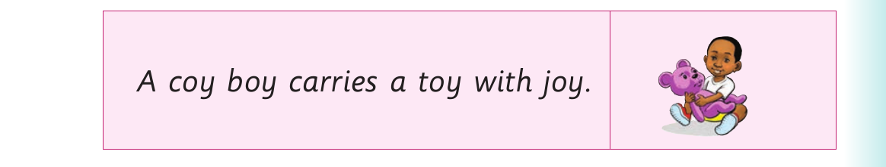

Replacing initial sounds - Activity 3
(b) I bake a cake every week. (c) Look at my book. (d) That man has a pan. (e) The boy has a toy. 6. Read the following tongue twister fast:

A coy boy carries a toy with joy.
Activity 3
1. Pronounce the following letter sounds. Or finger spell the following letters:
| w | b | p | m | j | s | t |
|---|
2. Read aloud or sign the words in the table. Then, replace the initial sounds with appropriate sounds of the letters in (1).
| fin | hen | cat | mug | fix |
|---|
Example: fin-pin
3. Pronounce or sign the new words you have formed in (2). 4. Read aloud or sign the following sentences: (a) Ben can pat a cat. (b) I saw ten lions in the den. (c) We have a jug and a mug. (d) A hen cannot hold a pen. (e) She threw an old kit into the pit.